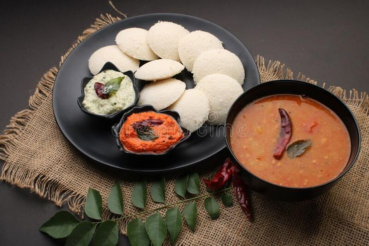
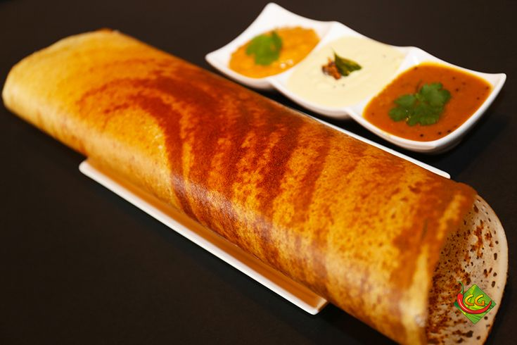
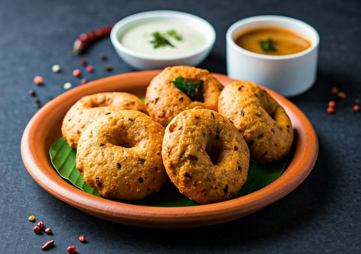
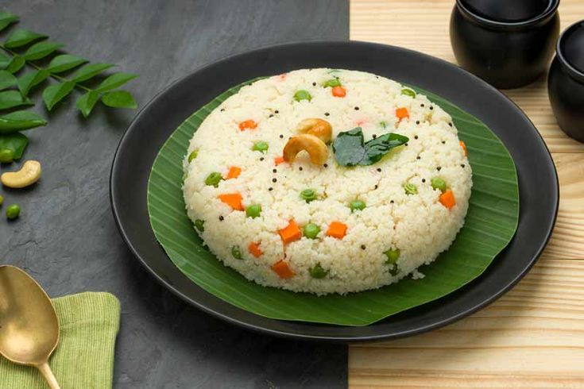
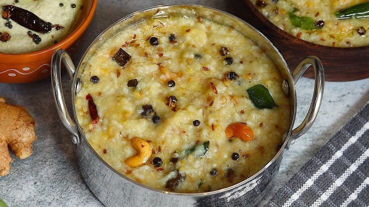
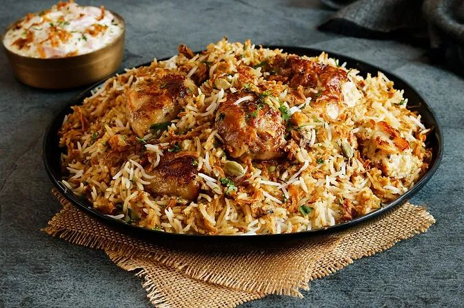
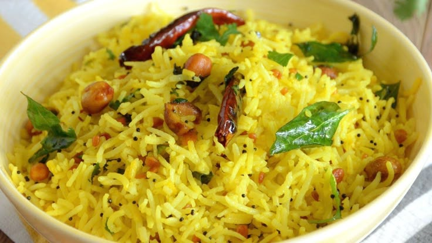
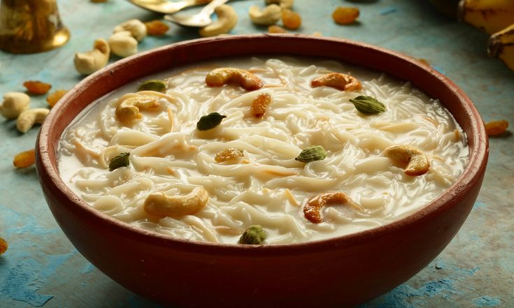
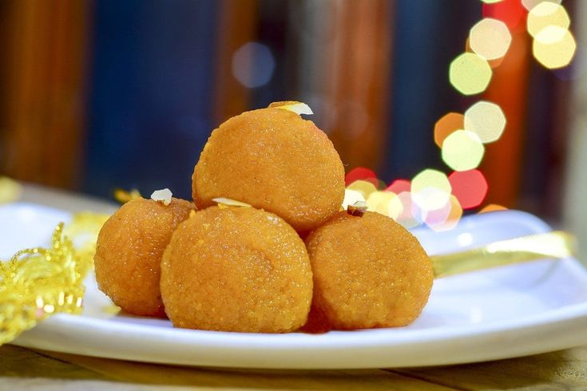

Idly
Idly is a soft, steamed South Indian breakfast dish made from a fermented batter of rice and urad dal, known for its light, fluffy texture and easy digestion.

Dosa
Dosa is a thin, crispy South Indian crepe made from fermented rice and urad dal batter, often served with chutney and sambar.

Vada
Vada is a savory, deep-fried South Indian snack made from urad dal, known for its crispy outside and soft, fluffy inside.

Upma
Upma is a warm, savory South Indian breakfast dish made from dry-roasted semolina, cooked with spices, vegetables, and ghee.

Pongal
Pongal is a warm, comforting South Indian dish made from rice and moong dal cooked with ghee, black pepper, and cumin.

Hyderabadi Biryani
Hyderabadi Biryani is a fragrant, richly spiced rice dish layered with marinated meat and cooked to perfection with saffron and fried onions.

Pulihora
Pulihora is a tangy, spicy South Indian rice dish flavored with tamarind, curry leaves, and crunchy peanuts.

Semiya Payasam
Semiya Payasam is a creamy South Indian dessert made with roasted vermicelli cooked in milk, sweetened with sugar, and flavored with cardamom and nuts.

Boondhi Laddu
Boondhi Laddu is a popular South Indian sweet made from fried gram flour round balls soaked in sugar syrup and shaped into delicious, round balls.